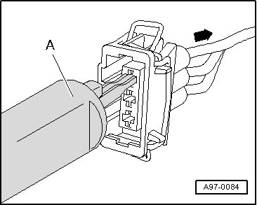
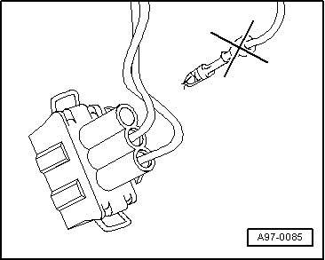
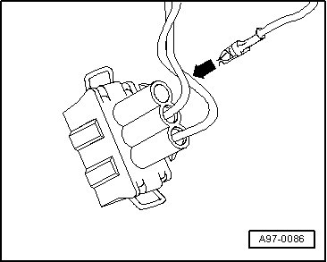
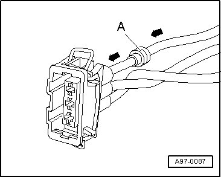

Single Wire Seals
Single Wire Seals
• Single wire seals prevent the penetration of water and dirt into the contact housing. They are installed e.g. in engine compartment and must be reinstalled after a repair.
• Single wire seal is crimped on at the factory together with contact on the wire, this is not the case for repair wires. Single wire seal must be slid on to wire first before crimping the repair wire.
• Single wire seals must always fit together with wire cross-section of the repair wire used. Outer circumference of single wire seal is aligned according to chamber circumference of the contact housing. Perform assembly using only the assembly tool with correct fit.
Assembling single wire seal:
- Release contact lock using assembly tool with correct fit - A - and then pull wire with single wire seal toward rear - arrow - out of contact housing.

- Cut off the old contact with single wire seal from the vehicle-specific wiring harness.

- Slide repair wire with new contact into corresponding chamber of contact housing until it engages.

- Put single wire seal - A - on to free end of repair wire.

• When doing this, small diameter of single wire seal must point toward contact housing.
- Slide single wire seal - A - on to repair wire up to the contact housing.
- Slide single wire seal - A - into contact housing until it stops using the corresponding assembly tool - B -.

- Shorten repair wire and single wire of vehicle-specific wiring harness according to your needs using Wire Stripper (VAS 1978/3).

- Crimp the stripped ends of repair wire and single wire of vehicle-specific wiring harness using crimp pliers and a crimp connection.